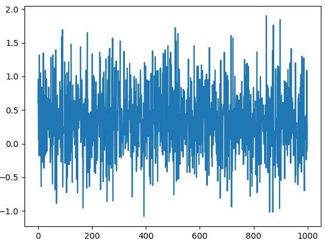
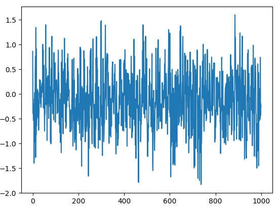

Nonlinear AR
timecave.data_generation.time_series_functions.nonlinear_ar_ts(number_samples, init_array, params, func_idxs)
Generate a time series array based on a nonlinear autoregressive (AR) model.
This function creates a time series array of a given length based on a nonlinear AR model with specified initial array, parameters, and function indices.
Parameters:
| Name | Type | Description | Default |
|---|---|---|---|
number_samples |
int
|
The total number of samples in the time series array. |
required |
init_array |
ndarray
|
The initial array for generating the time series. The lengths corresponds to the number of lags. |
required |
params |
list
|
The parameters for the nonlinear AR model. The index representing the specific nonlinear transformation to apply: 0: Cosine function. 1: Sine function. 2: Hyperbolic tangent function. 3: Arctangent function. 4: Exponential decay function. |
required |
func_idxs |
list
|
The indices of the nonlinear functions used in the model. |
required |
Returns:
| Type | Description |
|---|---|
ndarray
|
A time series array generated based on the specified nonlinear AR model parameters. |
Warnings
The lengths of init_array, params and func_idxs must match.
Notes
This method of generating synthetic time series data was first proposed by Bergmeir et al. (2018). Please refer to [1] for more details on this method.
References
1
Christoph Bergmeir, Rob J Hyndman, and Bonsoo Koo. A note on the validity of cross-validation for evaluating autoregressive time series prediction. Computational Statistics & Data Analysis, 120:70–83, 2018.
Examples:
>>> import numpy as np
>>> import matplotlib.pyplot as plt
>>> from timecave.data_generation.time_series_functions import nonlinear_ar_ts
>>> ts = nonlinear_ar_ts(1000, init_array=np.zeros(2), params=[0.5, -0.3], func_idxs=[0, 1]);
>>> _ = plt.plot(np.arange(0, ts.shape[0]), ts);
>>> plt.show();

Functions other than sinusoids can be used as well:
>>> ts2 = nonlinear_ar_ts(1000, init_array=np.zeros(4), params=[0.2, 0.6, -0.1, -0.4], func_idxs=[2, 3, 4, 3]);
>>> _ = plt.plot(np.arange(0, ts.shape[0]), ts2);
>>> plt.show();

Source code in timecave/data_generation/time_series_functions.py
583 584 585 586 587 588 589 590 591 592 593 594 595 596 597 598 599 600 601 602 603 604 605 606 607 608 609 610 611 612 613 614 615 616 617 618 619 620 621 622 623 624 625 626 627 628 629 630 631 632 633 634 635 636 637 638 639 640 641 642 643 644 645 646 647 648 649 650 651 652 653 654 655 656 657 658 659 660 661 662 663 664 665 666 667 668 | |